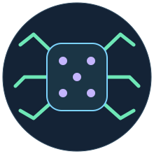

XSTING MK2 / PROJECT 02 / 발제 v5
주사위 기억 로봇
18축 6족 보행 + 5축 팔·그리퍼 자율 시스템

신호등 12회 점멸 기억 · 바코드 해석 · 전역 최적 퍽 할당 · 전방향 RL 보행 및 LiDAR-ESDF 연속 정합 · Eye-in-Hand ArduCam 탑뷰 파지/기립 및 새 관측 기반 9칸 재검증까지 전 과정 무개입 통합 스택
개발·시뮬레이션 검증 자료 · 실물 경기장 전체 미션 미확인 · 공식 1·2회차 결과는 작성 대기
하드웨어 플랫폼
- 구동부: 6족 18축 + 6축 팔 (24-DOF Dynamixel)
- 제어기: OpenCR 1.0 × 3보드 (
ID 200·201·202) - 적재함: 상판 12슬롯 전용 바스켓 탑재
멀티모달 센서 구성
- 전면: Intel RealSense D435 (신호·바코드·VSLAM)
- 팔 끝: ArduCam 광각 (
+300mm직상방 탑뷰) - 측위·안전: COIN-D4 2D LiDAR + 9축 IMU + 초음파
핵심 소프트웨어 환경
- Ubuntu
26.04.1 LTS· ROS 2Lyrical - CUDA
13.2· TensorRT FP16 · cuVSLAM / nvblox5.0 - MoveIt 2 (
2.15.2) + cuMotion + 41D RL Policy
1. 전체 ROS 2 시스템 아키텍처 및 데이터 흐름
① 인지 · SLAM 계층
xsting_vision / bringup
- 제로카피
vision컨테이너 - D435 → cuVSLAM + nvblox ESDF
- YOLOv8 TensorRT + 3D PCA (
/detections_3d) - ZXing 바코드 + 12회 신호 FSM (
/read_sign_barcode)
② 상위 지능 · 가드 계층
xsting_mission
llm_commander: 전역 12개 할당 및 자가 복구robot_command_server: 행동 계약 가드 (오배정·부분 하역 사전 차단)mission_bridge: 슬롯·격자 좌표 변환
③ 주행 · 정밀접근 계층
xsting_nav / approach
- 41D RL 정책(20Hz) + 100Hz 삼각보행 IK
- 2D LiDAR ↔ 정적 ESDF 초기·연속 위치 정합
- 10초 사람 대기 후 Dijkstra 우회
/approach_box: 상자 전면2cm도킹
④ 매니퓰레이션 · 하드웨어
xsting_pick_place / hardware
- MoveIt 2 + cuMotion GPU 플래너
- ArduCam 탑뷰 파지 + 누운 사각 퍽 기립
- 지도
+Y기준 주사위 3×3 하역 (2s안정) - 하차 후 신규 프레임 탑뷰 재검증
단일 소유권 & 무충돌 통합 런치 (auto_drive.launch.py / full_system.launch.py)
xsting_hardware가 robot_state_publisher와 /joint_states를 단일 소유하고,
주행(xsting_nav) ↔ 도킹(xsting_approach) 간 다리 제어권 양보 및 팔 조작 중 map→odom TF 동결로 제어 충돌을 원천 제거했습니다.
2. 엔드투엔드 자율 미션 수행 흐름 (7단계)
4.5s 수직 기립, 팔 홈 복귀, 2D LiDAR-ESDF 초기 정합
HOME에서 Code128 및 12회 점멸·종료소등 관측 (signal.json)
6개 시작 상자 순회, 2cm 도킹, 기립 후 12슬롯 전량 수거
Y 단일 모양 통일 보장 + R/G 매칭 계획 (allocation.json)
L1·L2·L3 각 3×3 정위치 일괄 하역 (오차 ≤10mm, 2s 안정)
ArduCam +300mm 신규 프레임 9칸 실측 (verification.json)
출발 구역 내부 진입 후 3.0s 이상 완전 정지 (DONE)
핵심 알고리즘 ①: 전역 12개 퍽 최적 할당 (planner.assign)
- 순차 선택 시 먼저 쓴 빨간/초록 퍽 때문에
Y그룹 단일 형상 구성이 막히는 데드락 예방 - 전체 12개 인식 풀에서
cylinder전용 vsbox전용Y후보를 모두 검증 후 남은 퍽이R·G횟수를 정확히 만족하는 해만 확정 - 동률 규칙(
R → Y → G) 및 불가능 입력 시 즉시 명시적 에러 정지
핵심 알고리즘 ②: Eye-in-Hand 탑뷰 정렬 & 새 관측 재검증
- 전면 D435의 근거리 사각지대(~15cm) 및 주사위 5·6 눈 뒷열 가림(Occlusion) 한계 극복
- 팔 끝 ArduCam이 상자 상공
+300mm직상방에서 9칸 전체를 조망하여 신규 타임스탬프(stamp) 기준 실측 ID·중심 오프셋(offset_mm) 기록
3. 실제 수행 결과 및 회차별 100점 판정표 (1·2회차 분리)
공식 1회차와 2회차의 결과는 섞지 않고 각각 기록하며, 두 회차 중 높은 단일 회차 전체 점수만 최종 반영합니다.
| 채점 항목 (판정 기준 요약) | 배점 | 공식 1회차 | 공식 2회차 | 검증 로그 근거 및 실패 사유 요약 |
|---|---|---|---|---|
| 1. 신호 순서 기억 (12개 시점별 색상 일치 각 1점) | 12 | __ / 12 |
__ / 12 |
각 회차 signal.json (sequence) 및 전면 영상 대조 |
| 2. 색상별 횟수 (R·Y·G 정답 횟수 각 3점) | 9 | __ / 9 |
__ / 9 |
각 회차 signal.json (counts) |
| 3. 바코드 해석 (실물 코드 + 정렬 방향 일치) | 4 | __ / 4 |
__ / 4 |
각 회차 signal.json (barcode) |
| 4. 장소 그룹 배정 (L1~L3 정답 그룹 각 3점) | 9 | __ / 9 |
__ / 9 |
각 회차 allocation.json (동률 R→Y→G 반영) |
| 5. 색상·모양 선택 (개수 + R/G 색상·Y 단일 모양 각 6점) | 18 | __ / 18 |
__ / 18 |
각 회차 allocation.json (y_shape_unified) |
| 6. 주사위 눈 배치 (정답 눈·오차 ≤10mm·2초 안정 각 10점) | 30 | __ / 30 |
__ / 30 |
현장 실측 및 media/images/*_UNLOAD_after.jpg |
| 7. 이동 후 검증 (새 관측 ID·위치 6점 + 중복/누락 2점) | 8 | __ / 8 |
__ / 8 |
각 회차 verification.json (신규 프레임 stamp·offset_mm) |
| 8. 출발 구역 복귀 (차체 전체 진입 + 3초 정지) | 10 | __ / 10 |
__ / 10 |
외경 영상 종료 구간 및 final_state.json |
| 총점 (100점) / 자율 완주 여부 / 통합 환산(25점) | 100 | ___ 점 |
___ 점 |
최종 반영: max(1회차, 2회차) × 0.20 + 완주(5/0) = __._ / 25점 |
4. 주요 실패 원인 분석 및 엔지니어링 개선 과정
① 파지 중 퍽 낙하 · 처짐 오차
원인: 위치 제어 시 그리퍼 +1.5mm 벌어짐 및 팔 신장 시 자중 처짐 발생
개선: -0.5mm 내측 예압 + Mode 5 전류 제한 도입, 팔 처짐 계수(droop_k=0.022) 실측 보정
② 장거리 보행 누적 드리프트
원인: 카펫 바닥 발끝 슬립으로 경기장 후반부 VSLAM/보행 오도메트리 수~십수 cm 이탈
개선: 360° 2D LiDAR ↔ 정적 경기장 ESDF 연속 정합(0.8s 주기) 및 팔 조작 시 TF 자동 동결
③ 주사위 5·6 눈 뒷열 가림
원인: 전면 D435 사각지대(~15cm) 및 경사 시야각으로 앞열 퍽이 뒷열 퍽을 가림
개선: 팔 끝 Eye-in-Hand ArduCam 장착, 상자 상공 +300mm 직상방 탑뷰 정렬·재검증 구현
④ 누운 직육면체 퍽 적재 불가
원인: 전도된 사각 퍽을 그대로 파지하면 바스켓 슬롯 삽입 및 수직 배치 불가능
개선: 원거리 견인(PullFarLyingPuck) 후 손목 회전 + 미세 이완(grip_loosen) 재파지 기립 시퀀스 도입
⑤ 상위 LLM의 간헐적 배정 착오
원인: 장기 추론 중 목적지 그룹 개수를 혼동한 UNLOAD 명령 생성 가능성
개선: robot_command_server 결정론적 계약 가드가 물리 실행 전 REJECTED 차단 후 즉시 자가 교정
⑥ 회차 간 재시작 시 신호 무응답
원인: 1회 성공 후 GPU 절약을 위해 sign_barcode 컴포넌트가 자동 언로드됨
개선: 회차 간 표준 런치 재기동 초기화 절차 문서화 및 회차별 아카이빙 스크립트 분리
5. 시스템의 현재 한계 및 재현성 보장 체계
현재 시스템의 기술적 한계 및 향후 과제
- 강한 역광·반사 조명 민감도: 직사광선이 신호등 발광면에 반사될 때 색상 포화 가능성 → 시작 전 1초 히스토그램 기반 D435 자동 노출 스텝 튜닝으로 고도화 예정
- 안정성 우선 보수적 속도 제한: 12개 무낙하 운반 및
≤10mm정밀도를 위해 보폭(4.2cm)과 팔 속도(vel_scale=0.30)를 제한하여 완주 시간 다소 소요 → 적재량 연동 가변 속도 프로파일 적용 가능 - 비마커 환경 동종 퍽 개체 추적: 동일 색상·모양 퍽이 외력으로 동시에 뒤섞일 경우 위치 기반 매칭에 의존 → 슬롯 1:1 좌표 이력 바인딩 및 상면 태그 융합으로 보완
팀원 동일 재현성 & 보안 검증 완료 항목
- 원클릭 통합 실행:
ros2 launch xsting_bringup auto_drive.launch.py(실기 /sim_fake:=true모두 지원) - 재현 환경 자동 채취:
submission/scripts/collect_repro_info.sh로 OS·CUDA·ROS·커밋·단위테스트 자동 기록 - 회차별 로그 격리 & 비밀키 차단:
archive_official_run.sh가round_1/round_2분리 및sk-...토큰 혼입 자동 검사 - 비상정지 4단계 완비:
/mission/pause·/mission/stop·/nav/estop· 물리 전원 스위치 + 과기울기(>38°) 자동 차단